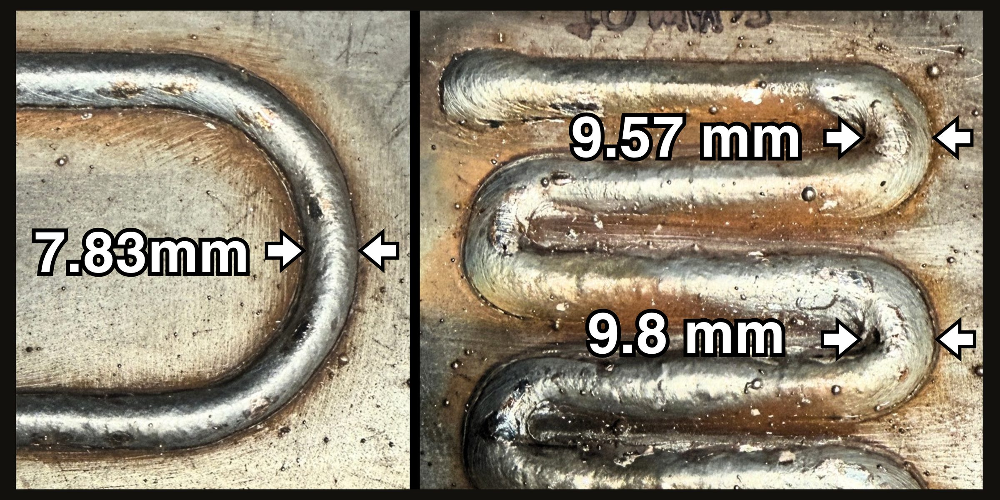
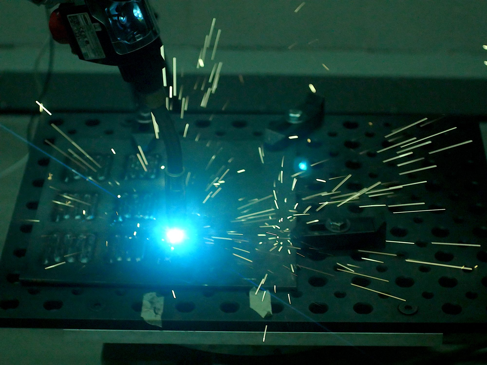
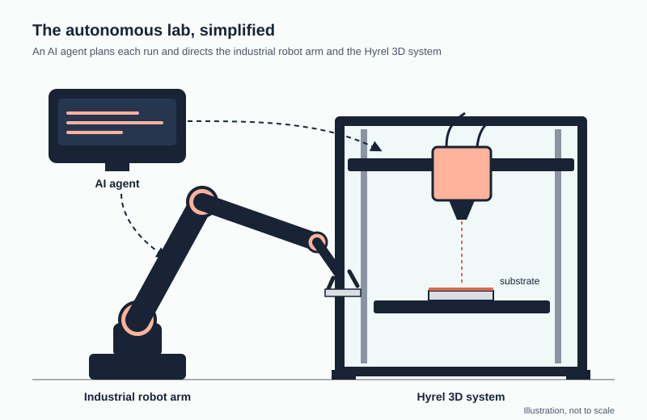
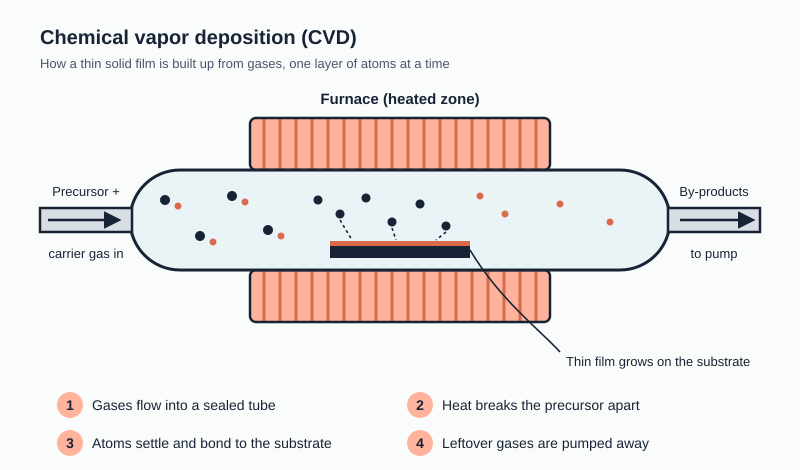

Part I · Wesleyan University · 2026
Curves in 3D Printing Steel
Predictive modeling of how robotic toolpath curvature influences metal deposition and bead geometry in Wire Arc Additive Manufacturing (WAAM).
- Lab
- Chang-Davidson Lab, Wesleyan
- Role
- Undergraduate researcher · June 2026–present
- Process
- WAAM · ABB robot + Fronius GMAW welder
- Status
- First-author manuscript under advisor review
01 — The question
How does the shape of a robot's path change what it produces?

I lead this study at Wesleyan University's Chang-Davidson Lab, working one-on-one with PI Elizabeth Chang-Davidson, Ph.D. The lab focuses on steel additive manufacturing with a robotic MIG (GMAW) welding setup.
The project looks at how curved toolpaths and process parameters (wire feed rate, travel speed and toolpath radius) shape the steel bead that gets deposited: a critical manufacturing consideration when translating design into physical objects.
02 — The experiment
Programming the path and welding the samples.

I program an ABB industrial robot paired with a Fronius GMAW welder in RobotStudio to deposit steel beads along curved toolpaths, across a matrix of toolpath radius, wire feed rate and travel speed.
I collected and analyzed more than 1,000 bead width measurements in MATLAB. To check them, I section samples on a waterjet cutter, mount them in acrylic, then grind, polish and etch them for optical microscopy, using the cross-sections to validate the caliper measurements and spot porosity defects.
Skills used
- Experimental design
- ABB robot programming (RobotStudio)
- WAAM with Fronius GMAW
- Data collection (1,000+ bead measurements)
- MATLAB analysis & normalization
- Exponential regression modeling
- Waterjet cutting
- Metallographic prep: mount, grind, polish, etch
- Optical microscopy & porosity analysis
- Research communication
03 — The work


04 — What I found
Curvature matters.
Toolpath curvature substantially changes deposited bead geometry, especially as the curve gets tight relative to the bead's own width. I developed normalization methods and an exponential model that predicts bead width with about 90% accuracy, and that can be refit for other processes and materials.
First-author manuscript under advisor review.

05 — Presentations
Sharing the research
I've presented the work, titled Pointless: The Curves and the Beads Talk, in two poster sessions and two oral presentations at Wesleyan in 2026. My oral presentation at the Summer Symposium placed third for the Spark Prize for research communication.
Research & recognition
- $5,000 fellowship
Wesleyan Summer Research Fellowship
Wesleyan University · 2026
- Award
Spark Prize for Research Communication — 3rd Place
Wesleyan Summer Research Program · 2026
- First author
Predictive Modeling of Bead Geometry at Curvatures in Wire Arc Additive Manufacturing
Shao, J., Blacker, A., & Chang-Davidson, E. · Manuscript in preparation
- Presentations
Pointless: The Curves and the Beads Talk
Two poster and two oral presentations · Wesleyan University · 2026
Part II · Duke University · 2026
Autonomous Robotic Laboratory
Helping build an autonomous materials lab, where AI agents run experiments with an industrial robot arm and a Hyrel 3D system for chemical vapor deposition (CVD).
- Lab
- Wang Lab, Duke University
- PI
- Haozhe (Harry) Wang, Ph.D.
- Role
- Research intern (remote) · Nov 2026–present
- Focus
- Robot arm + Hyrel 3D system · CVD
01 — The system
Lab equipment that runs its own experiments.


I help integrate the lab's equipment, an industrial robot arm and a Hyrel 3D system used for chemical vapor deposition, with AI agents so experiments can be planned and carried out without a person at the bench.
The work builds directly on the industrial robot programming I do for my WAAM research at Wesleyan.